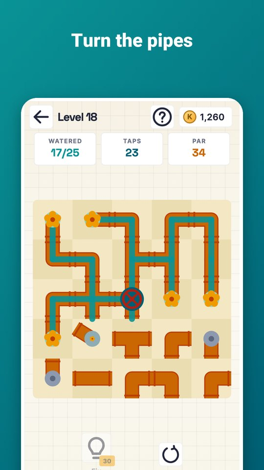
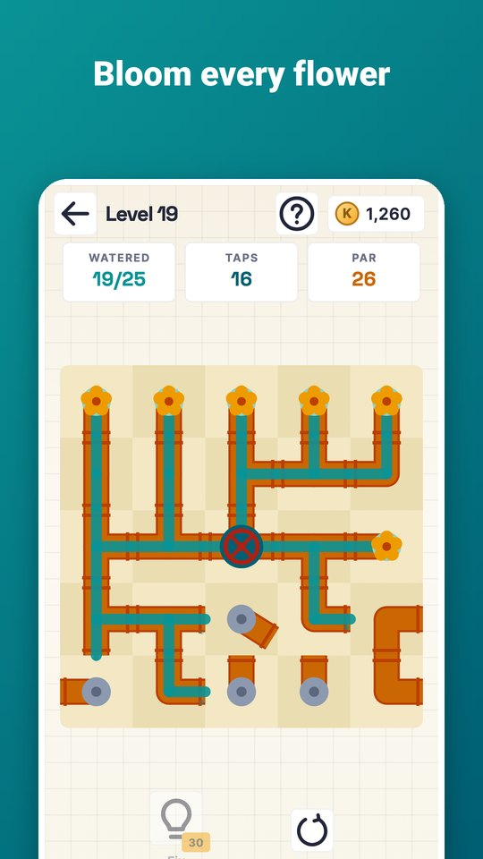
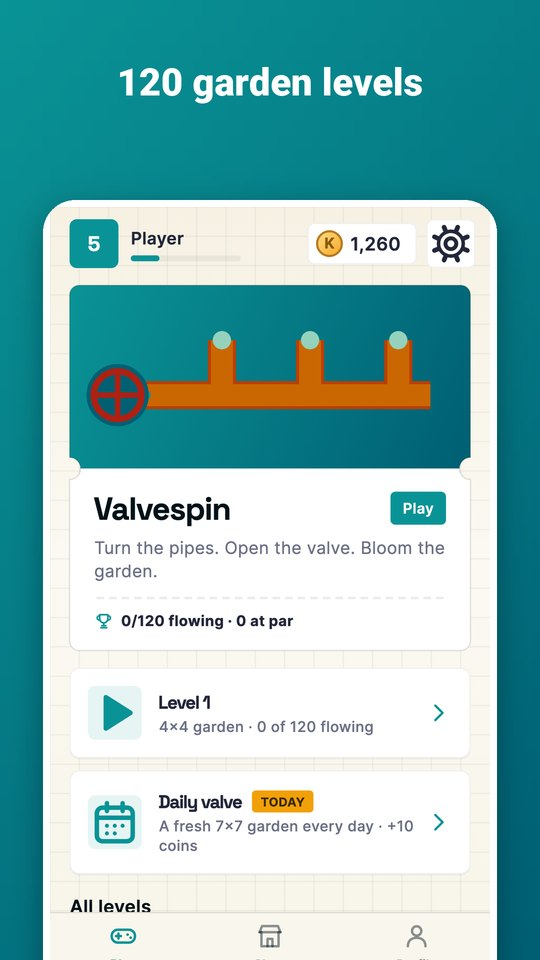
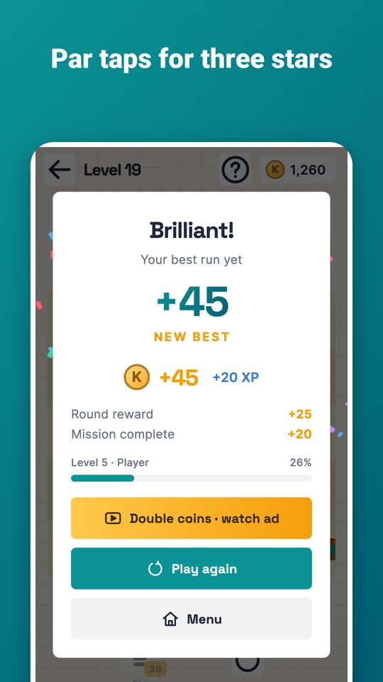
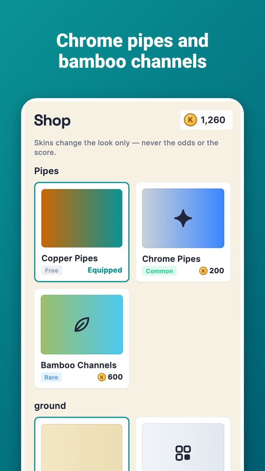

Valvespin is a pipe puzzle in a sunny garden. Tap a pipe to turn it a quarter; water flows from the red valve through every joined pipe.
- Water every pipe and bloom every flower, with no open ends dripping.
- 120 levels that grow from small yards to big gardens, plus a 7×7 Daily valve.
- Finish in par taps for three stars.
- A fix helper turns one wrong pipe the right way and locks it.
- Daily rewards, missions and achievements.
- Pipe and ground styles: Chrome Pipes, Bamboo Channels, Bathhouse Tiles and Night Garden.